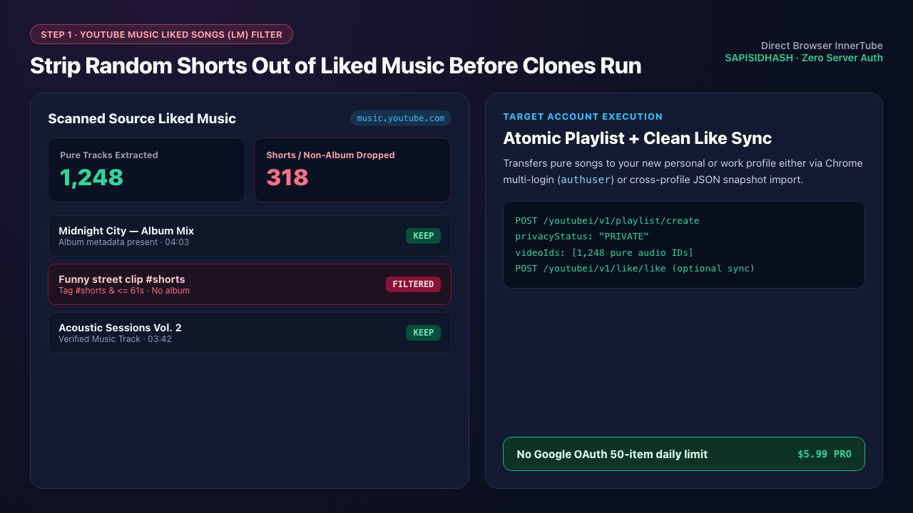
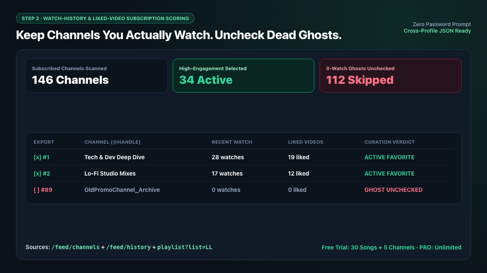

Stop Polluting Fresh YouTube Accounts with Shorts & Dead Subscriptions
When you split personal and work Google profiles or start fresh after wrapping up a travel period or business project, blind OAuth copy tools clone random #shorts clips into your Liked Music queue and dump 100+ zero-watch channels onto your homepage. Here is how client-side SAPISIDHASH filtering keeps only pure tracks and active creators.
What Is TubeCleanMover PRO?
TubeCleanMover PRO is a local Chrome MV3 extension built by DH Labs ($5.99 one-time pass, 30 music tracks + 5 channels free trial) that cleans before migrating: it separates #shorts and non-album clips under 61 seconds from your YouTube Music Liked Songs, scores subscribed channels against feed/history and list=LL Liked Videos to leave dormant ghost channels unchecked, and clones only selected items via direct in-browser InnerTube requests using SAPISIDHASH with zero external server uploads and no 50-item daily Google OAuth quota cutoff.
1. Three Ways Blind OAuth Transfer Tools Break a Clean Account
- Random Shorts leak into music playlists: YouTube mixes Liked Videos and Liked Songs. Funny 30-second vertical clips end up inside your study or driving music queue unless album metadata and duration heuristics filter them out first.
- Inactive subscriptions bury your homepage: Over five years, most accounts collect 100+ channels you no longer watch. Cloning every subscription turns your fresh recommendation feed into clutter on Day 1.
- Third-party cloud tools hit the 50/day OAuth quota wall: Public Google Data API v3 dashboards share strict daily write quotas, halting halfway through large subscription lists while requesting broad remote access.

#shorts and <=61s non-album clips before creating a clean private playlist on the target account.2. How Watch-History Match Keeps Only Creators You Watch
TubeCleanMover inspects your active subscriptions alongside your local YouTube Watch History (/feed/history) and Liked Videos (playlist?list=LL). Channels with recent watch or like activity stay checked automatically, while dormant zero-watch channels remain unchecked unless you manually re-enable them.

| Workflow Capability | Standard OAuth Web Transfer | TubeCleanMover PRO ($5.99 One-Time) |
|---|---|---|
| Credential & Data Flow | Remote cloud OAuth tokens stored externally | 100% local Chrome MV3 via browser SAPISIDHASH |
| YouTube Music Filtering | All liked clips mixed together | Strips #shorts / <=61s non-album videos first |
| Subscription Selection | 100% blind subscription clone | Cross-checks Watch History & Liked Videos automatically |
| Daily Write Limits | Blocked around ~50 subscriptions/day | No OAuth 50/day cap · batch pacing inside browser |
| Cross-Profile Support | Requires logging both accounts into web portal | Supports same-browser authuser slots + JSON snapshot import |
3. Cross-Profile JSON Transfer & Free Dry-Run Mode
If your destination Google account lives inside a completely separate Chrome Profile, export your curated music IDs and active channel list as a local JSON snapshot on the source profile, then import it directly into the destination Chrome Profile in seconds.
You can scan unlimited tracks and channels for free right away. Every install includes a built-in free run of 30 Liked Music songs and 5 subscriptions before entering your one-time PRO serial key ($5.99 on Gumroad).
4. Frequently Asked Questions
How do I install TubeCleanMover without waiting on Chrome Web Store review?
Download the commercial ZIP file from Gumroad, extract it to a local folder, open chrome://extensions, toggle Developer Mode on, click Load Unpacked, and select the extracted folder. Setup takes under 60 seconds.
Can I test TubeCleanMover on my own YouTube account before paying?
Yes. Scanning is unlimited for free, and you can execute a real transfer of up to 30 filtered songs plus 5 curated subscriptions before choosing the $5.99 PRO pass.
Does DH Labs ever see my watch history or Google password?
No. The extension only declares local host permissions for www.youtube.com and music.youtube.com inside Chrome and validates your offline license key locally via SHA-256 verification.